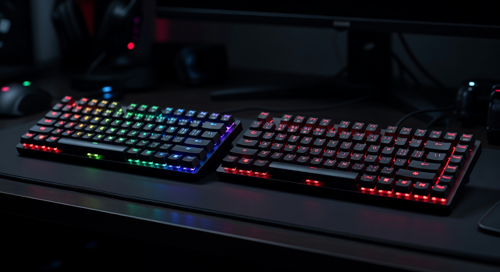

As an Amazon Associate I earn from qualifying purchases. Links below may earn us a commission at no extra cost to you.
SteelSeries Apex 3 TKL vs Redragon K552 KUMARA: Budget TKL Gaming Keyboard Showdown
Under $50 for a TKL gaming keyboard: two very different answers to the same budget. The SteelSeries Apex 3 TKL uses whisper-quiet membrane switches with IP32 water resistance and 10-zone RGB — it's the premium-branded quiet option for shared spaces, dorm rooms, or anyone who can't handle clicky noise. The Redragon K552 KUMARA uses genuine Outemu Blue mechanical switches in a metal alloy frame — true clickiness, tactile feedback, and 50-million-click durability at $5 less. This comparison tells you exactly which one belongs in your setup.

SteelSeries Apex 3 TKL
~$45
Membrane · IP32 · 10-zone RGB · Quiet
VS
Redragon K552 KUMARA
~$40
Outemu Blue Mechanical · Metal frame · Red LED
Quick Verdict
K552 for mechanical feel and durability; Apex 3 TKL for quiet typing and water resistance
The Redragon K552 is the better keyboard for most gamers at this price — genuine Outemu Blue mechanical switches deliver satisfying tactile feedback and superior longevity compared to the Apex 3 TKL's membrane switches, and the metal alloy frame feels noticeably more substantial. The K552 is also $5 cheaper. The Apex 3 TKL justifies its existence with IP32 water resistance (invaluable if you eat and drink at your desk), significantly better RGB, and a much quieter typing experience. If you share a room, work in a library, or hate the clickety-clack of mechanical blues, the Apex 3 TKL is the sensible quiet choice. For pure gaming performance on a budget, the K552 wins.
Head-to-Head: Category by Category
Switch Feel & Typing Experience
Redragon K552 (Outemu Blue Mechanical)
Mechanical switches are objectively more tactile and responsive than membrane for gaming and typing. Outemu Blues have a distinct tactile bump and audible click at the actuation point — you feel exactly when each keystroke registers. This is useful in gaming for knowing when a key has fired, and satisfying for typing. The Apex 3 TKL's membrane "whisper quiet" switches have a soft, mushy feel by comparison — there's a tactile bump, but it's subtle and the bottom-out feel is spongy rather than crisp. Experienced typists transitioning from membrane keyboards will immediately notice the difference. If you've only ever typed on membrane, both feel reasonable — but the mechanical switches of the K552 are objectively more precise at keypress registration.
Noise Level
SteelSeries Apex 3 TKL (membrane quiet)
Outemu Blue switches are loud. The K552 produces a crisp, satisfying click with every keystroke — great for solo gamers who enjoy the sound and feel, but genuinely disruptive in shared spaces, apartments, or during late-night gaming sessions. The Apex 3 TKL's membrane switches are whisper quiet by design — each keystroke produces minimal sound, making it a genuinely practical choice for dorm rooms, shared offices, or anyone with noise-sensitive housemates. If noise is even a minor concern, the membrane wins decisively.
Build Quality & Durability
Redragon K552 (metal alloy frame)
The K552's metal alloy top plate feels dense and substantial — it won't flex or creak, and the added weight keeps it planted on the desk during aggressive gaming. Outemu Blue switches are rated for 50 million keystrokes. The Apex 3 TKL uses a lightweight polymer frame that feels less premium when handled — it's perfectly functional but hollow-sounding and noticeably cheaper to the touch. Its membrane switches are rated for 20 million presses, less than half the K552's mechanical switches. For long-term ownership, the K552 will outlast the Apex 3 TKL on both frame rigidity and switch lifespan.
Water Resistance
SteelSeries Apex 3 TKL (IP32)
The Apex 3 TKL has IP32 water resistance — it can handle spills and splashes without damage. This is a feature rarely seen at budget keyboard prices and genuinely practical for gamers who drink at their desk (which is most of us). The K552 has no water resistance rating — spill a drink on it and you'll likely be shopping for a replacement. If you're accident-prone or game in casual settings, the Apex 3 TKL's water resistance is a meaningful advantage that the K552 simply can't match.
RGB Lighting
SteelSeries Apex 3 TKL (10-zone RGB)
The Apex 3 TKL wins RGB handily. Its 10-zone RGB with reactive effects through SteelSeries GG software looks genuinely impressive for a $45 keyboard — you can set different colors per zone, wave effects, reactive typing illumination, and sync with other SteelSeries peripherals. The K552 KUMARA offers single-color red LED (some RGB variants exist but are slightly more expensive) — functional but not customizable. If RGB aesthetics matter to you or you're building a color-coordinated gaming setup, the Apex 3 TKL provides significantly more visual flexibility.
Value for Money
Redragon K552 (~$40)
At ~$40, the K552 delivers mechanical switches, a metal frame, and 50M click durability. That's exceptional value — most mechanical keyboards with these qualities cost $60–$80. The Apex 3 TKL at $45 offers a premium-branded membrane experience with better RGB and water resistance, but membrane keyboards are inherently a step below mechanical for gaming feel and longevity. If you're spending $40-50 on your first gaming keyboard and care about tactile feedback and long-term durability over quiet operation, the K552 is the smarter buy. If noise, spills, or RGB customization matter more, the Apex 3 TKL is worth the extra $5.
Spec Comparison
| Spec | SteelSeries Apex 3 TKL | Redragon K552 KUMARA |
|---|---|---|
| Price | ~$45 | ~$40 |
| Switch Type | Whisper Quiet Membrane | Outemu Blue Mechanical |
| Switch Lifespan | 20 million keypresses | 50 million keypresses |
| Actuation Type | Tactile (membrane) | Clicky + Tactile (mechanical) |
| Noise Level | Very quiet | Loud click |
| Layout | TKL (80%) | TKL (80%) |
| Build Material | Polymer plastic | Metal alloy + ABS |
| Water Resistance | IP32 rated | None |
| RGB | 10-zone customizable RGB | Single-color red LED |
| Polling Rate | 1000Hz | 1000Hz |
| Software | SteelSeries GG | None required |
4 Key Differences
1
Mechanical vs Membrane Switches
The K552 has genuine Outemu Blue mechanical switches — tactile, clicky, and rated for 50 million keystrokes. The Apex 3 TKL has membrane switches with a soft bump feel and 20 million keystroke rating. For gaming responsiveness and typing feel, mechanical is superior. For quiet environments, membrane wins.
2
IP32 Water Resistance vs None
The Apex 3 TKL's IP32 rating means it can survive spills and splashes. The K552 has no water resistance — a spilled drink is a death sentence. For desk drinkers and accident-prone gamers, this is a material difference at any price point.
3
10-Zone RGB vs Single-Color Red LED
The Apex 3 TKL's 10-zone RGB is dramatically more configurable — per-zone colors, reactive effects, SteelSeries GG sync. The K552's red LED is fixed, single-color, with brightness adjustment only. For aesthetic flexibility, the Apex 3 TKL wins clearly. The K552 RGB variant (when available) closes the gap.
4
Metal Frame vs Plastic
The K552's metal alloy top plate feels substantially more solid — no flex, no creak, heavier and better planted. The Apex 3 TKL's polymer body is lighter and feels hollow by comparison. For a keyboard you'll use daily for years, the K552's build quality is better suited to the wear of gaming.
Which Should You Buy?
SteelSeries Apex 3 TKL
~$45
Best for: Shared spaces · Dorm rooms · Spill-prone desks · RGB aesthetics on a budget
🛒 Check Price on Amazon
See All Keyboard Picks →
Redragon K552 KUMARA
~$40
Best for: First mechanical keyboard · Solo gaming · Durability · Budget competitive gaming
🛒 Check Price on Amazon
See All Keyboard Picks →
More Keyboard Guides & Comparisons
Frequently Asked Questions
For most gaming scenarios, yes. Mechanical switches have a cleaner, more precise actuation point with consistent registration — each keystroke fires at the exact same travel distance. Membrane switches have a softer, less predictable feel where the actuation point isn't as clearly defined. In fast-paced gaming (rapid keypresses, quick direction changes), the mechanical advantage is tangible. That said, the Apex 3 TKL's membrane is designed with a deliberate tactile bump — it's better than typical cheap membrane keyboards and is a real option for casual gaming.
Yes — the K552 is one of the most-reviewed budget gaming keyboards for good reason. Outemu Blue switches provide clear tactile feedback at actuation, the metal frame keeps the board stable, and the TKL layout gives you more desk space for mouse movement in FPS games. It's not a premium board — the keycaps will develop shine over months of use and the LED lighting is basic — but for competitive gaming at $40, it delivers exactly what you need at a price hard to beat.
Outemu Blue switches are budget clones inspired by Cherry MX Blue switches. They have a similar clicky-tactile feel with comparable actuation force (~50g) and travel distance. In blind tests, most users can't easily distinguish between Outemu and Cherry MX Blues. The main difference is lifespan (Outemu: 50M vs Cherry: 100M clicks) and quality consistency. For a $40 keyboard, Outemu Blues are excellent value — the mechanical feel is genuine and satisfying, even if they don't match the refinement of premium switches.
The Apex 3 TKL connects via USB and can be used on PlayStation and Xbox as a USB keyboard for chat and navigation. It's not officially certified for console gaming but works as a standard USB input device. For PC gaming, it connects directly and benefits from SteelSeries GG software for RGB customization. The Redragon K552 also works as a USB keyboard on consoles. Neither headset is wireless, so USB connectivity is universal.
The HyperX Alloy Origins Core (~$69) is the natural next step — it uses HyperX's own mechanical switches (linear or tactile options), has a metal frame with a TKL layout, and feels substantially more premium than either keyboard on this page. For $70, it bridges the gap between budget and mid-range keyboards effectively. If you want to step into the enthusiast range, the SteelSeries Apex Pro TKL (~$189) with adjustable analog actuation is a significant jump up in both features and typing experience.
Affiliate Disclosure: As an Amazon Associate I earn from qualifying purchases. Prices shown are approximate and may vary.